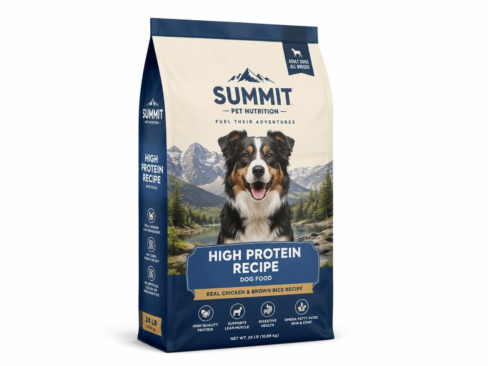

Custom dog food flat bottom bags with zipper, handle and high barrier material options.
BestPackFactory supplies this product for B2B brands, importers, distributors, ecommerce sellers and enterprise packaging buyers. We support custom size, material, artwork, surface finish, barcode, QR code, inserts and global delivery.
| Business Model | B2B RFQ only, no retail checkout |
| MOQ | 500 PCS |
| Customization | Size, material, logo, color, finish, insert, barcode, QR code |
| Best For | Brands, wholesalers, distributors, ecommerce sellers and private label buyers |
| Contact | Lisa Wu · lisa@colorprintingpackage.com · WhatsApp +86 158 8653 0985 |
Can I print my own logo?
Yes. We support custom logo printing, CMYK, Pantone color matching and surface finishes.
What is the MOQ?
The MOQ for custom production is 500 PCS.
How do I get a quote?
Send product type, size, material, artwork, quantity and delivery country by email or WhatsApp.
The table below is written for industrial RFQ comparison. Final production specification is confirmed by sample approval, filling test and export packing test.
| Recommended material structure | PET 12µm / VMPET 12µm / PE 100–130µm; PET 12µm / AL 7µm / PE 110µm for high-fat pet food |
|---|---|
| Total laminate thickness | 120–180 µm depending bag volume and kibble edge hardness |
| Oxygen barrier OTR | ≤ 1.0 cc/m²·day for metalized structure |
| Moisture barrier WVTR | ≤ 1.0 g/m²·day for metalized structure |
| Seal strength | ≥ 45 N / 15 mm for heavy fill weights |
| Zipper type | Heavy-duty PE zipper 8–12 mm; slider zipper optional for 2 kg+ bags |
| Puncture resistance target | ≥ 8 N for laminated pouch body, subject to final structure |
| Bag style | Flat bottom pouch, quad seal bag, stand-up pouch with handle hole optional |
| Drop test | Filled bag 1.0 m drop test on 6 faces for export packaging validation |
| Surface finish | Matte, gloss, anti-scratch matte, spot UV window or logo |
| MOQ | 500 PCS per custom size / artwork |
| Artwork file | AI / PDF / PSD accepted; vector logo required; 3 mm bleed |
| Color tolerance | ΔE ≤ 3.0 against approved digital proof |
| Dimension tolerance | ±2 mm for flexible packaging; ±1.5 mm for paper boxes unless stated |
| Quality inspection | AQL 2.5 for major defects; random inspection before shipment |
| RFQ data required | Size, product weight, filling condition, artwork, quantity, destination port/country |
Click below to contact us quickly by WhatsApp or email. We can help with dieline, samples, printing, materials and worldwide shipping.
💬 Chat on WhatsApp ✉ Email Inquiry lisa@colorprintingpackage.comOur standard minimum order quantity (MOQ) for custom projects is 500 PCS. We support small brands with factory-direct pricing even at low volumes.
Yes! Once you provide your required dimensions, our engineering team will send you a free dieline template within 24 hours to help with your artwork design.
Sample production typically takes 7-10 days. Bulk production is usually completed within 20-30 days after the final sample approval.